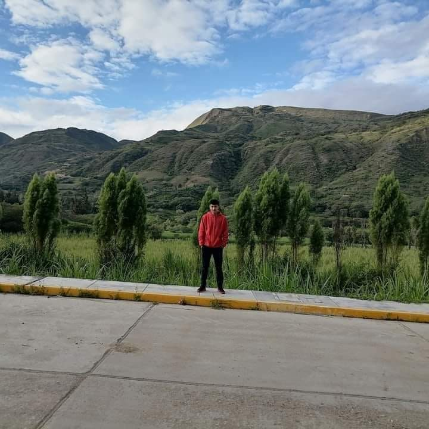
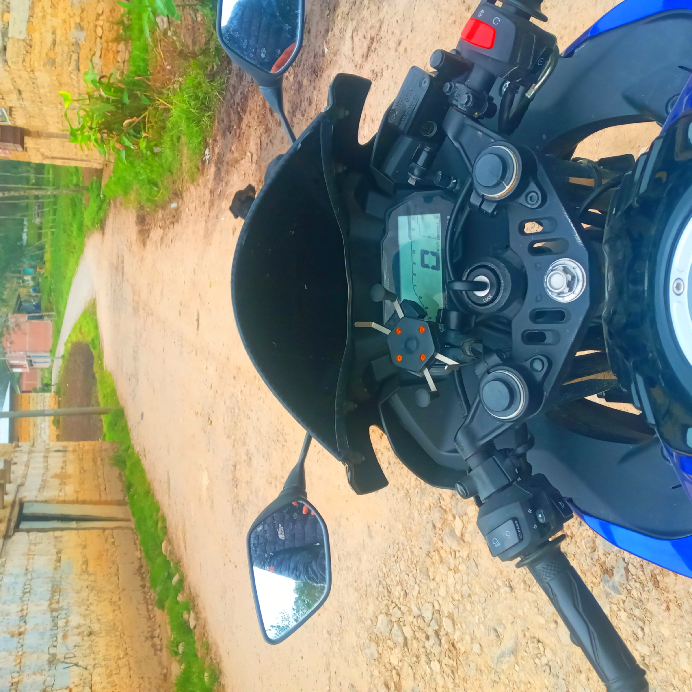
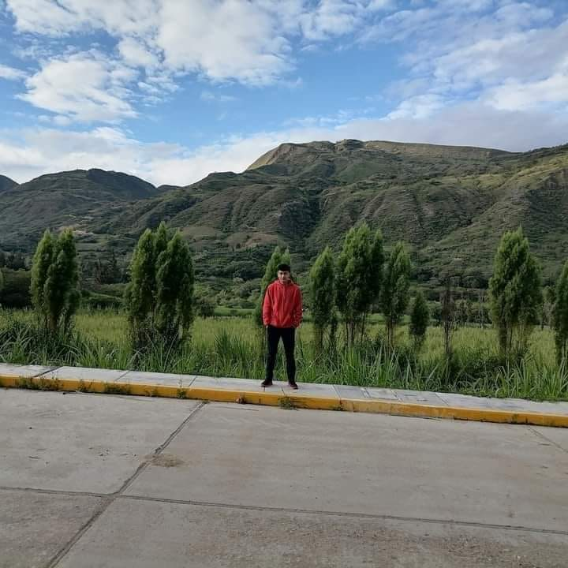
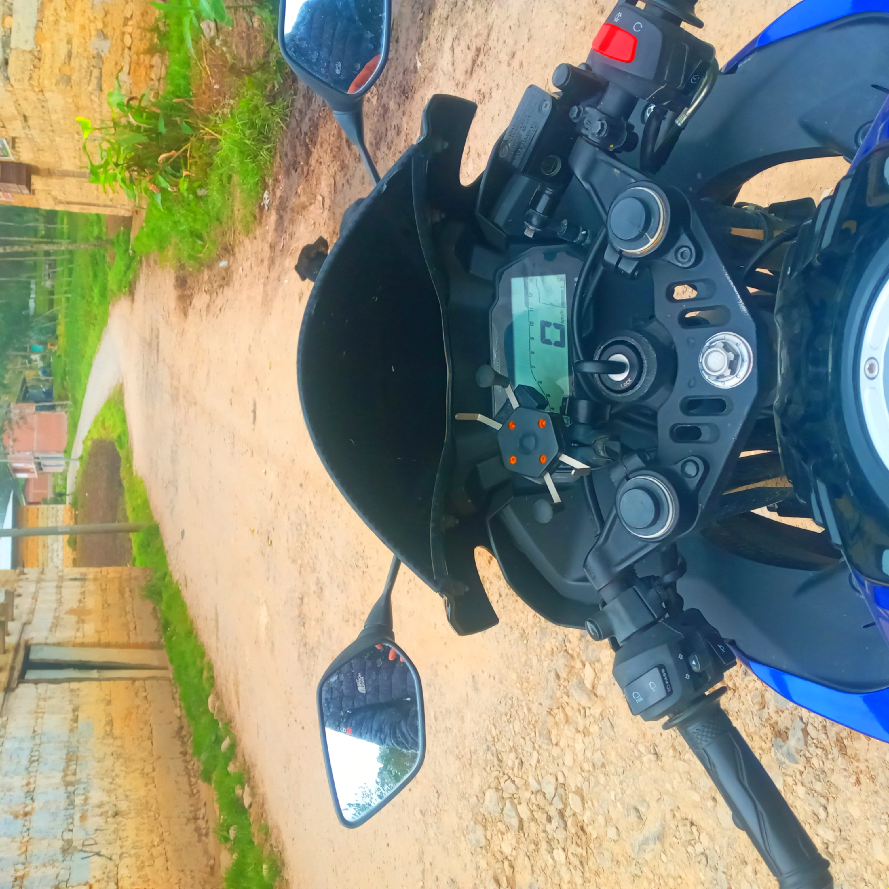

AUTOR: IVAN BERNAL BECERRA
📁Inicio
ACERCA DE MÍ
¡Hola! 👋 Mi nombre es Ivan Bernal Becerra, tengo 19 años y resido en la hermosa ciudad de Chiclayo. 🏡 Soy estudiante de ATI (Arquitectura y Tecnología de la Información), una disciplina que combina mi pasión por la creatividad y la tecnología. 💻🎨
Desde joven he sentido curiosidad por el diseño web y la programación, lo cual me ha llevado a explorar y crear proyectos como este sitio web dedicado a explorar el mundo a través de diferentes medios de transporte y comunicación. 🌍🚀
EXPLORANDO EL MUNDO
En este sitio web, comparto mi pasión por el diseño web y la programación. Aquí podrás encontrar proyectos en los que he trabajado, cada uno explorando diferentes aspectos del mundo y la tecnología. 🌐🔍
Mi enfoque principal es combinar el arte y la ciencia para crear experiencias digitales únicas. Desde interfaces de usuario intuitivas hasta aplicaciones web complejas, mi objetivo es siempre innovar y mejorar. 🚀✨
IMÁGENES DE MI VIDA
 


